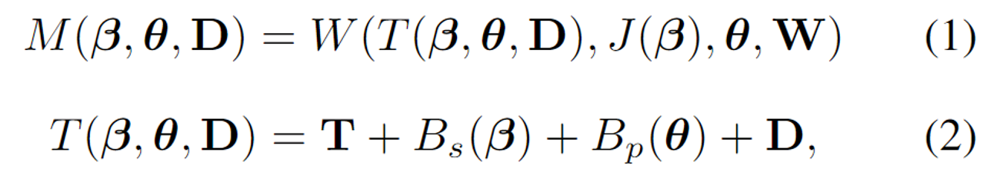
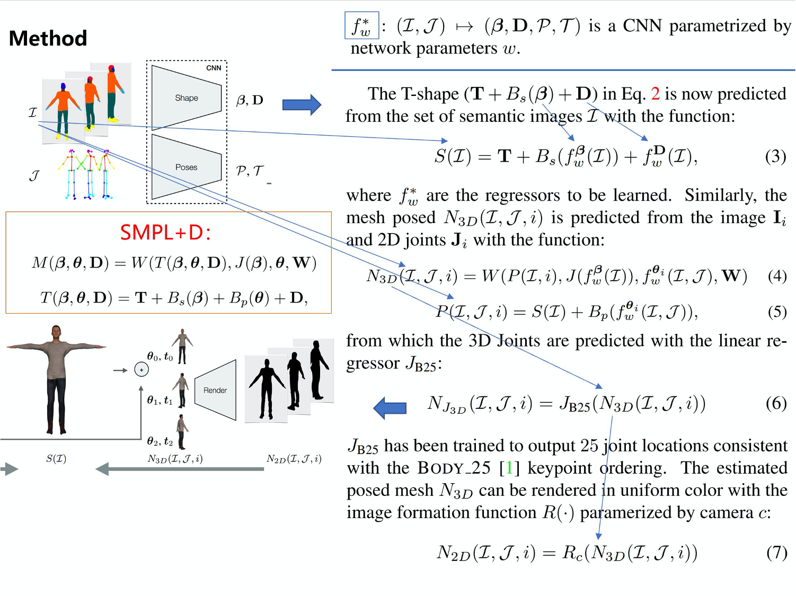
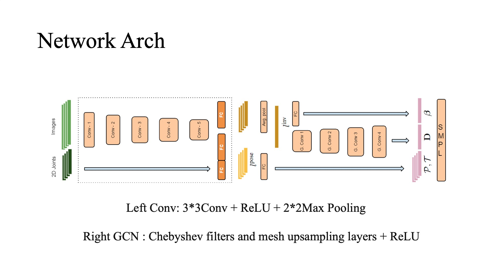
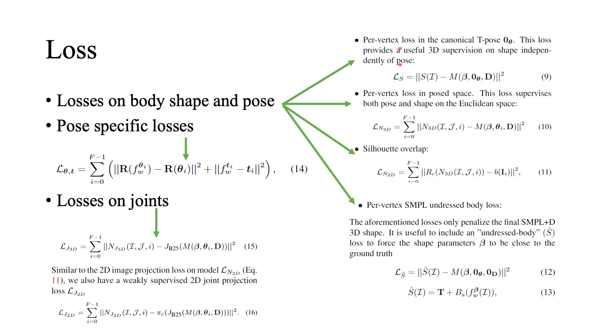
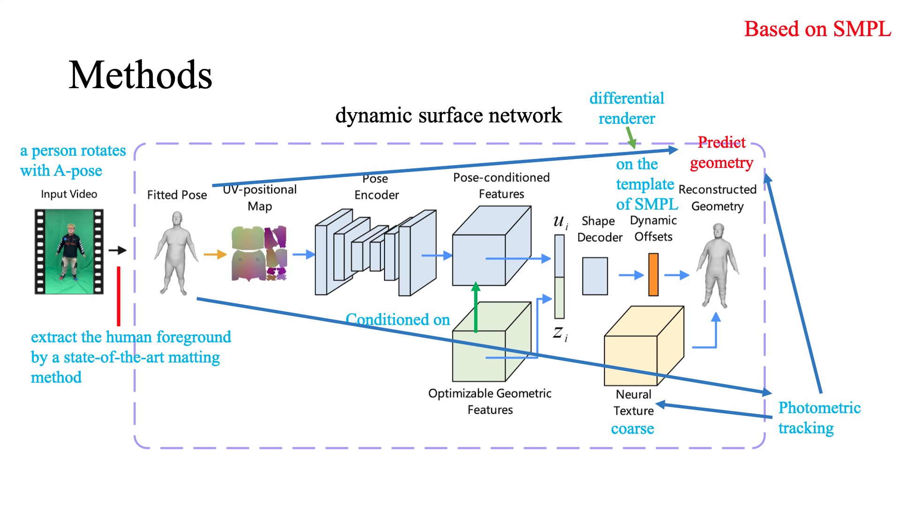
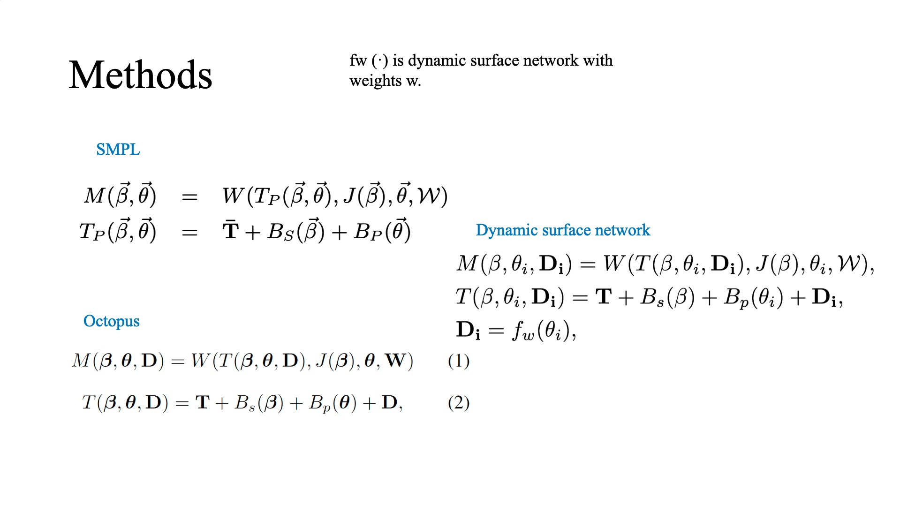
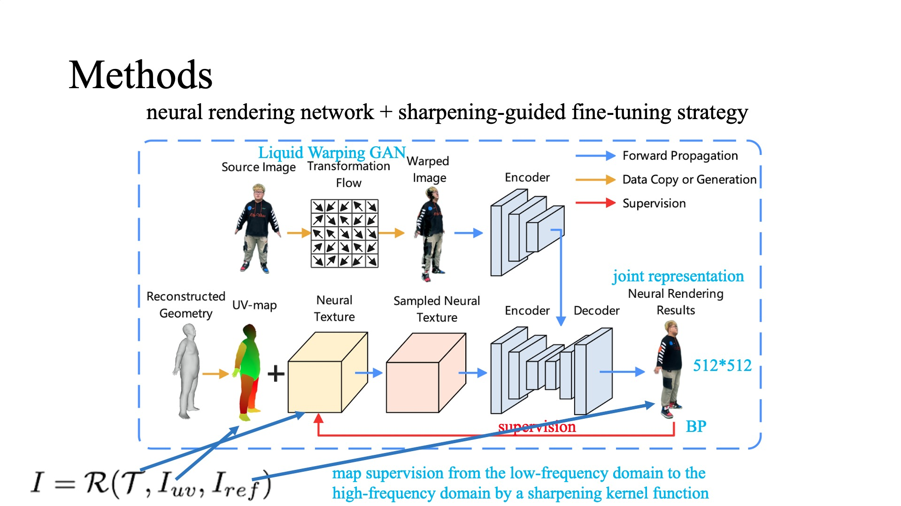

Related papers
Author = DanteSU
homepage | paper | code | dataset
3DV
Detailed Human Avatars from Monocular Video
From: 3DV'2018
WACV
SMPLpix: Neural Avatars from 3D Human Models
From: WACV'2021
ICCV
Tex2shape
From: ICCV'2019
Background
Generate 3D human body model with details of garment from an RGB image(without depth information)
Motivation
Regression from image pixels directly to 3D mesh displacements is not so good:
- Ignoring the rich illumination and shading information contained in RGB values
- inputs and outputs are not aligned
Novelity
- propose to regress shape as UV-space displacement and normal map
- turn a hard full-body shape reconstruction problem into an easier 3D pose-independent image-to-image translation problem
Cons
- the photo must taken from the front
- pose is strictly to A pose
Liquid Warping GAN: A Unified Framework for Human Motion Imitation, Appearance Transfer and Novel View Synthesis
From: ICCV'2019
homepage | paper | code | dataset
The Power of Points for Modeling Humans in Clothing
From: ICCV'2021
homepage | paper | code | dataset
ECCV
Keep it SMPL: Automatic Estimation of 3D Human Pose and Shape from a Single Image
From: ECCV'2016
Bodynet: Volumetric inference of 3D human bodyshapes
From: ECCV'2018
CVPR
Video Based Reconstruction of 3D People Models
From: CVPR'2018
homepage | paper | code | dataset
Learning to reconstruct people in clothing from a single RGB camera
From: CVPR'2019
Intro
Max Planck Institute for Informatics, Germany
Octopus, a learning-based model to infer the personalized 3D shape of people from a few frames (1-8) of a monocular video in which the person is moving with a reconstruction accuracy of 4 to 5mm
Human Representation

While D here is free-form deformations
Dataset
- 163 scans from renderpeople.com
- 54 from axyzdesign.com
- 1826 scans from Twindom
- generate synthetic 3D data by non-rigidly registering SMPL+D to each of the scans
Method



Function4D: Real-time Human Volumetric Capture from Very Sparse Consumer RGBD Sensors
From: CVPR'2021
High-Fidelity Human Avatars from a Single RGB Camera
From: CVPR'2022
homepage | paper | code | dataset
Intro
A coarse-to-fine framework to reconstruct a personalized high-fidelity human avatar from a monocular video
- A single RGB camera
- A single video
- 300 frames
- A single person
- Rotate with A-pose
- relieve the misalignment caused by changed pose and shape in different frames
Methods


